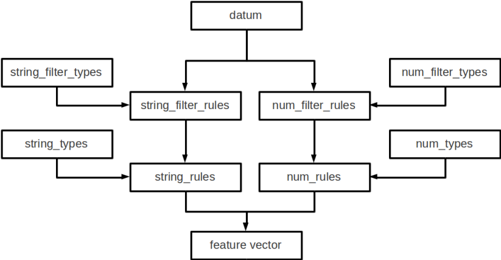

HTML文章やTwitterつぶやき等は、そのままの形で機械学習に用いることができません。そのため、実際に機械学習をする場合は、それらの非定形データを特徴ベクトルに変換する必要があります。この処理を行うのが、特徴ベクトル（FV）コンバータです。特徴ベクトル化が成功すれば、後は機械学習アルゴリズムが適切に処理します。Jubatusでは、その重要な特徴ベクトル化を、プログラムロジックとしてハードコードせずに、外出しの設定ファイルで定義させるツールを用意しました。ここでは、FVコンバータによるHTML文章等の生の非定形データを特徴ベクトルに変換する処理の流れと、実際の設定方法について解説します。
HTML文章やTwitterつぶやき等の非定形データの特徴ベクトル化は、以下の流れで行われます。
Jubatusでは、①フィルタリングでデータからどのような要素を取り除くか、②特徴抽出でどのように特徴の抽出を行い、どのように重み付けをするかを、JSON形式の設定ファイルで定義することができます。一連の処理は、最もシンプルな設定によって多くの場合はうまく動くことが予想されます。 以下に最もシンプルな設定を記載します。 この設定を利用すると、文字列データは全てスペース文字で分割してそれぞれの単語を特徴量とし、数値データはその値をそれぞれ特徴量として利用しています。 実際にアプリケーションを書くときに、より高い精度の学習結果を求める場合は、設定をチューニングすることで望ましい結果を得られる可能性があります。
{ /** 文字列データのフィルタ設定。ここではフィルタリングしていません。 **/ "string_filter_types": {}, "string_filter_rules": [], /** 数値データのフィルタ設定。ここではフィルタリングしていません。 **/ "num_filter_types": {}, "num_filter_rules": [], /** 文字列データの特徴抽出器の設定。 「"type": "space"」はスペース文字で分割するという設定です。 「 "sample_weight": "bin", "global_weight": "bin"」は重み付けの設定です。 詳細は後述します。 **/ "string_types": {}, "string_rules": [ { "key": "*", "type": "space", "sample_weight": "bin", "global_weight": "bin" } ], /** 数値データの特徴抽出器の設定。 「"type": "num"」は与えられた値を特徴量としてそのまま用いるという設定です。 詳細は後述します。 **/ "num_types": {}, "num_rules": [ { "key": "*", "type": "num" } ] }
Jubatusで利用できるデータ形式は、datumと呼ばれる非常にシンプルなkey-valueデータ形式です。 datumには2つのkey-valueが存在します。一つはキーも値も文字列の文字列データ (string_values) です。 もう一方は、キーは同様に文字列ですが、値は数値の数値データ (num_values) です。 前者には名前、テキスト、職業など、任意のテキストデータを入れることができます。 後者には年齢、年収、アクセス回数など、任意の数値データを入れることができます。 この2つのデータから、機械学習を行う際に必要となる特徴量を抽出するのが、このFVコンバータです。 また、効率を重視して、それぞれのkey-valueは、各言語（Java、Python、Ruby、C++）のmap型や辞書型を利用せず、keyとvalueのペアの配列で表現します。
以下に例を示します。
( [ ("user/id", "ippy"), ("user/name", "Loren Ipsum"), ("message", "<H>Hello World</H>") ], [ ("user/age", 29) , ("user/income", 100000) ] )
これにフィルタリングを施した後の例は以下のようになります。
( [ ("user/id", "ippy"), ("user/name", "Loren Ipsum"), ("message", "<H>Hello World</H>"), ("message-detagged", "Hello World") ← "message"からHTMLタグを除外した後の値 ], [ ("user/age", 29), ("user/age_kazoe", 30) , ←"user/age"に1を追加して数え年に変換した値 ("user/income", 100000) ] )
続く特徴抽出では、例えばフィルタリングの結果として得られた”message-detagged”をスペース毎に分割して、”Hello”と”World”を取得し、出現回数で重み付けすることができます。この例では”Hello”も”World”も一度ずつしか出現しませんが、仮に”Hello Hello Hello World”のような文字列であれば、特徴抽出の結果として”Hello”と”World”が得られ、その重みはそれぞれ3と1という結果になります。また”user/age_kazoe”等の数値データの場合、特徴抽出では、数値をそのまま重みとして扱ったり、数値データの対数(log)を重みとして利用できます。フィルタリングと特徴抽出の設定方法と得られる結果の詳細は後述します。
大まかな処理の流れは以下のようになっています。
datumは文字列データと数値データの2つがあるため、それぞれが別々の処理フローを流れます。
文字列データには、まずstring_filter_rulesが適用されて、フィルタ済みデータが追加されます。 その状態で、string_rulesによって文字列データからの特徴量が抽出されます。
数値データには、まずnum_filter_rulesが適用されて、フィルタ済みデータが追加されます。 その状態で、num_rulesによって数値データからの特徴量が抽出されます。
フィルタと特徴抽出器には引数を必要とするものもあるため、それらはtypesで事前に準備することによって各規則で利用することができるようになります。

Jubatusはフィルタという機能を用いて、datum中のkey-valueペアを変換して、別の要素として追加することができます。 例えば、元のデータがHTMLで書かれていたとします。 この中のタグ文字列（<a> など）は、学習時には邪魔になることが多く、そのため予め フィルタリング して使いたいことがあります。 あるいは、メール本文の引用（>から始まる行）を削除したい時に利用するのが、フィルタ機能です。
例として、”message”内の文字列からHTMLタグを取り除きます。 まず、「HTML タグを取り除く」というルールを定義し、それをkey = “message”に適用します。 これは、以下のようなconfigで表現されます。
"string_filter_types": { "detag": { "method": "regexp", "pattern": "<[^>]*>", "replace": "" } }, "string_filter_rules": [ { "key": "message", "type": "detag", "suffix": "-detagged" } ]
まず、”string_filter_types”でフィルタを定義し、これを”detag”と命名します。”detag”フィルタに対して、”regexp”という手法で、”<[^>]*>”を”“に置き換える、というフィルタを定義します。 次に、実際に datum のどの要素にどう適用するのか書いたのが”string_filter_rules”です。 ここでは、”message”という名前の”key”の要素に対して、先で定義した”detag”フィルタを適用し、”message”に”-detagged”を付与したkey、すなわち”message-detagged”に結果を格納することを示しています。
また、”age”を数え年に変換(+1歳に)するには、
"num_filter_types": { "add_1": { "method": "add", "value": "1" } }, "num_filter_rules": [ { "key": "user/age", "type": "add_1", "suffix": "_kazoe" } ]
とします。この挙動も先と同じで、”user/age”に1加えた結果が”user/age_kazoe”に格納されます。
これらのfilterを通すことにより、次のdatumが得られます:
( [ ("user/id", "ippy"), ("user/name", "Loren Ipsum"), ("message", "<H>Hello World</H>"), ("message-detagged", "Hello World") ], [ ("user/age", 29), ("user/age_kazoe", 30) , ("user/income", 100000) ] )
それぞれの要素について、詳細に説明します。
string_filter_types
<フィルタ名>: <引数> からなる辞書を指定します。 フィルタ名は文字列、引数は文字列から文字列への辞書です。 引数には必ず”method”を指定します。 残りの引数に関しては、”method”の内容に応じて必要な引数が異なります。 指定できる”method”の値と、それぞれに対応した引数は以下のとおりです。
- regexp
正規表現にマッチした部分を、指定した文字列に変換します。このフィルタは–disable-re2付きでコンパイルすると利用できません。
pattern: マッチさせる正規表現を指定します。re2を利用するため、利用できる表現はre2のマニュアルを参照してください。 replace: 置き換え後の文字列を指定してください HTMLのすべてのタグを消すには、例えば以下のようなstring_filter_typeを宣言してください。
"string_filter_types": { "detag": { "method": "regexp", "pattern": "<[^>]*>", "replace": "" } }
- dynamic
プラグインを利用します。詳細は後述します。
path: プラグインのパスを指定します。 function: プラグインの呼び出し関数を指定します。この値はプラグインによって異なります。
string_filter_rules
フィルタの適用規則を指定します。 規則は指定された順に評価されます。datumがある規則の条件を満たした場合、そのルールが適用され、変換後の値がdatumに追加されます。 規則は、元のdatumと、それまでにフィルタ規則で追加された値の両方に適用されます。各規則は”key”,”type”,”suffix”の要素からなる辞書を指定します。
key: datumの各要素のどのkeyとマッチさせるかを指定します。詳細は後述します。 type: 利用するフィルタ名を指定します。これは “string_filter_types”の項で作ったフィルタ名を指定します。デフォルトで利用できるフィルタはありません。 suffix: 変換後の結果を格納するkeyのサフィックスを指定します。例えばsuffixに”-detagged”が指定され、”name”という名前のkeyに規則が適用された場合、結果は”name-detagged”という名前のkeyに格納されます。
“key”の要素は以下の内のいずれかのフォーマットで指定します。但し、datumの全要素に対して、すべての規則が適用されるかチェックされます。したがって、複数の規則がマッチした場合は両方の規則が適用されて、複数のフィルタ済みの値が追加されることに注意してください。 なお、”key”に関しては以降でも登場しますが、全て同じフォーマットであり、複数適用される可能性がある点も同様です。
値 意味 “*” or “” 全ての要素にマッチします。”key”にこれが指定されると必ず適用されることになります。 “XXX*” 末尾に*をつけると、その前のみをプレフィックスとして使用します。つまり、”XXX”で始まるkeyのみにマッチします。 “*XXX” 先頭に*をつけると、その後のみをサフィックスとして使用します。つまり、”XXX”で終わるkeyのみにマッチします。 “/XXX/” 2つのスラッシュ(/)で囲うと、その間の表現を正規表現とみなして、正規表現でマッチします。–disable-re2付きでコンパイルすると利用できません。 その他 以上のいずれでもない場合は、与えられた文字列と一致するkeyのみにマッチします。
num_filter_types
“string_filter_types” と同様、<フィルタ名>: <引数> からなる辞書を指定します。利用の仕方はstring_filter_typesとほぼ同じです。 <フィルタ名> は文字列、引数は文字列から文字列への辞書です。 <引数> には必ず”method”を指定し、残りの引数は”method”の値に応じて必要なものが異なります。 指定できる”method”の値と、それぞれに対応した引数は以下のとおりです。
- add
元の値に指定した値を足します。
value: 足す値の文字列表現を指定します。例えば3足すのであれば、”3”と指定します。数値型ではなく文字列として指定する点に注意してください。
- dynamic
プラグインを利用します。詳細は後述します。
path: プラグインのパスを指定します。 function: プラグインの呼び出し関数を指定します。
num_filter_rules
こちらも、string_filter_rules同様、フィルタの適用規則を指定します。 規則は複数からなり、各規則は”key”, “type”, “suffix”の要素からなる辞書を指定します。
key: datumの各要素のどのkeyとマッチさせるかを指定します。詳細はstring_filter_rulesを参照してください。 type: 利用するフィルタ名を指定します。これはstring_filter_typesの項で作ったフィルタ名を指定します。デフォルトで利用できるフィルタはありません。 suffix: 変換後の結果を格納するkeyのサフィックスを指定します。
“key”の指定の仕方は、string_filter_rulesを参照してください。
ここでは文字列からの特徴抽出と数値からの特徴抽出の設定について解説します。
文字列型に対する特徴抽出器と、その抽出規則の適用方法について解説します。 以下に、設定の例を示します。 この例では、”user/name”の値はそのまま特徴量として使用し、”message”は文字2グラムを特徴量とし、”message-detagged”はスペース文字で分割した単語を特徴量とします。
"string_types": { "bigram": { "method": "ngram", "char_num": "2" } }, "string_rules": [ { "key": "user/name", "type": "str", "sample_weight": "bin", "global_weight": "bin" }, { "key": "message", "type": "bigram", "sample_weight": "tf", "global_weight": "bin" }, { "key": "message-detagged", "type": "space", "sample_weight": "bin", "global_weight": "bin" } ]
この設定を用いた場合に得られる結果は以下のようになります。 “message”は”bigram”設定なので2文字ずつに分割され、特徴量”H>”は文字列中に2度出てくるのでその重みは2になります。
キー 文字列 特徴量 重み “user/name” “Loren Ipsum” “Loren Ipsum” 1 “message” ” <H>Hello World</H>” “<H” 1 “H>” 2 “>H” 1 “He” 1 “el” 1 “ll” 1 “lo” 1 “o “ 1 ” W” 1 “Wo” 1 “or” 1 “rl” 1 “ld” 1 “d<” 1 “</” 1 “/H” 1 “H>” 2 “message-detagged” “Hello World” “Hello” 1 “World” 1
下記、設定の詳細を解説します。
string_types
string_typesで文字列特徴抽出器を定義します。主に、パスなどの引数を指定しなければならない特徴抽出器は、一度string_typesで指定してから利用しなければいけません。 string_filter_typesなどと同様、<抽出器名>:<引数> からなる辞書を指定します。 引数は文字列から文字列への辞書で、必ず”method”を指定する必要があります。 それ以外に必要な引数は”method”に応じて異なります。 指定できる”method”の値と、それぞれに対応した引数は以下のとおりです。
- ngram
隣接するN文字を特徴量として利用します。こうした特徴量は文字N-gram特徴と呼ばれます。
char_num: 利用する文字数の文字列表現を指定します。文字数は0より大きい必要があります。 例として、連続する2文字およぼ3文字を特徴として利用する、bigramとtrigramを定義する方法を記します。
"string_types": { "bigram": { "method": "ngram", "char_num": "2" }, "trigram": { "method": "ngram", "char_num": "3" } }
- dynamic
プラグインを利用します。詳細は後述します。
path: プラグインのパスを指定します。 function: プラグインの呼び出し関数を指定します。
string_rules
文字列特徴の抽出規則を指定します。 string_filter_rulesなどと同様、複数の規則を羅列します。 各規則は、”key”, “type”, “sample_weight”, “global_weight”からなる辞書で指定します。 文字列データの場合、与えられた文字列から特徴量を抽出し、そこに対して重みを設定する必要があります。 重みの設定の仕方を決めるのが、”sample_weight”と”global_weight”の2つのパラメータです。 実際に利用する重みは、2つの重みの積を重み付けとして利用します。
key: datumの各要素のどのkeyとマッチさせるかを指定します。string_filter_rulesを参照してください。”*”や”“を設定した場合は、フィルタ処理前の要素も特徴抽出されるので注意してください。”*-detagged”のように設定することで回避できます。
type: 利用する抽出器名を指定します。これはstring_typesの項で作った抽出器名を指定します。また、以下の抽出器はデフォルトで利用できます。
値
意味
"str"
文字列分割を行わず、指定された文字列そのものを特徴として利用します。
"space"
スペース文字で分割を行い、分割された部分文字列を特徴として利用します。
sample_weight: 各key-value毎の重み設定の仕方を指定します。これはkey-value一つに対して決定される重みです。
値
意味
"bin"
重みを常に1とします。
"tf"
与えられた文字列中で出現する回数で重み付けをします。例えば5回”hello”が出現したら、重みを5にします。
"log_tf"
tfの値に1を足してlogを取った値を重み付けに利用します。例えば5回”hello”が出現したら、重みはlog(5 + 1)にします。
global_weight: 今までの通算データをから算出される、大域的な重み付けを指定します。
値
意味
"bin"
重みを常に1とします。
"idf"
文書正規化頻度の逆数の対数を利用します。例えば文書1000件中で50件にその特徴が含まれた場合、重みはlog(1000/50)にします。大まかには出現頻度の少ない特徴ほど大きな重みが設定されます。
sample_weightとglobal_weightは、ともにbinにしておいても通常のケースでは正しく動作します。 また、例えば分類問題など重み自体を学習するケースでは、ともにbinにしておいても自動的に調整されます。
数値型に対しても、文字列型同様変換ルールを記述します。 また、数値型に関しても、ユーザー定義の変換器を定義することができます。
"num_types": { }, "num_rules": [ { "key": "user/age", "type": "num" }, { "key": "user/income", "type": "log" }, { "key": "user/age_kazoe", "type": "num" } ]
この設定を用いた場合に得られる結果は以下のようになります。 “user/income”のみ与えられた数値の対数を重みに利用する設定にしています。
( [ ("user/id", "ippy"), ("user/name", "Loren Ipsum"), ("message", "<H>Hello World</H>"), ("message-detagged", "Hello World") ], [ ("user/age", 29), ← 重み = 29 ("user/age_kazoe", 30) , ← 重み = 30 ("user/income", 100000) ← 重み = log(100000) = 5 ] )
下記、設定の詳細を解説します。
num_types
num_typesで数値データに対しる特徴抽出器を定義します。 string_typesなどと同様、<抽出器名>: <引数> からなる辞書を指定します。 引数は文字列から文字列への辞書で、必ず”method”を指定する必要があります。 それ以外に必要な引数は”method”に応じて異なります。 指定できる”method”の値と、それぞれに対応した引数は以下のとおりです。
- dynamic
プラグインを利用します。詳細は後述します。
path: プラグインのパスを指定します。 function: プラグインの呼び出し関数を指定します。
num_rules
数値特徴の抽出規則を指定します。 string_rulesなどと同様、複数の規則を羅列します。 各規則は、”key”, “type”からなる辞書で指定します。 重みの付け方や特徴名の指定の仕方もそれぞれの”type”ごとに異なります。
key: datumの各要素のどのkeyとマッチさせるかを指定します。詳細はstring_filter_rulesを参照してください。”*”や”“を設定した場合は、フィルタ処理前の要素も特徴抽出されるので注意してください。
type: 利用する抽出器名を指定します。これはnum_typesの項で作った抽出器名を指定します。ただし、以下の抽出器はデフォルトで利用できます。
値
意味
"num"
与えられた数値をそのまま重みに利用します。
"log"
与えられた数値の対数を重みに利用します。但し、数値が1以下の場合は0とします。
"str"
与えられた数値を文字列として扱います。これは、例えばIDなど、数値自体の大きさに意味のないデータに対して利用します。重みは1とします。
Jubatusでは特徴ベクトルのキーをハッシュ化することでメモリ消費を抑えることができます。特徴ベクトルのキーをハッシュ化することで、特徴ベクトルの次元数の最大長を制限することができますが、ハッシュの衝突により学習精度の低下が発生する可能性があります。
この機能はデフォルトでは無効です。使用するには、変換設定にhash_max_sizeを指定します。
{ "string_filter_types": {}, "string_filter_rules": [], "num_filter_types": {}, "num_filter_rules": [], "string_types": {}, "string_rules": [{"key": "*", "type" : "str", "sample_weight": "bin", "global_weight" : "bin"}], "num_types": {}, "num_rules": [{"key" : "*", "type" : "num"}], "hash_max_size": 16 }
最適なhash_max_sizeの値は、使用するデータセットおよび環境により異なります。hash_max_sizeが制限するのは入力される datum のキー数ではなく、(変換後の) 特徴ベクトルのキー数であることに注意してください。
フィルタと抽出器では、それぞれプラグインを利用することができます。プラグインは単体の動的ライブラリファイル（.soファイル）です。 ここではプラグインの使い方について解説します。
各フィルタと抽出器のいずれの場合も、プラグインの指定の仕方は同じです。CLASS_types(CLASS は string または num)で、フィルタや抽出器を指定する際のパラメータで、”method”に”dynamic”を、”path”に.soファイルへのパスを、”function”に各プラグイン固有の呼び出し関数名を指定します。 プラグインのパスは、原則としてフルパスですが、デフォルトのプラグインディレクトリ (多くの場合は $PREFIX/lib/jubatus/plugin または $PREFIX/lib64/jubatus/plugin) に格納されているプラグインについてはファイル名のみで指定することもできます。また、その他のパラメータに関しては、各プラグイン固有のパラメータを渡します。
Jubatusでは、デフォルトで以下の3つの文字列特徴量のプラグインが提供されています。ただし、コンパイルオプションによっては一部のプラグインがビルドされないため、注意してください。
- libmecab_splitter.so
string_typesで指定できます。MeCabを利用して文書を単語分割し、各単語を特徴量として利用します。–enable-mecabオプション付きでコンパイルした場合のみ利用可能です。
function: “create”を指定します。 arg: MeCabエンジンに渡す引数を指定します。この指定がないと、MeCabのデフォルト設定で動作します。引数の指定の仕方は、MeCab のドキュメント を参照してください。 "string_types": { "ux": { "method": "dynamic", "path": "libux_splitter.so", "function": "create", "dict_path": "/path/to/keyword/dic" } }
- libre2_splitter.so
string_typesで指定できます。ux-trieを利用して、与えられた文書から最長一致で辞書マッチするキーワードを抜き出して、それぞれを特徴量として利用します。 単純な最長一致なので、高速だが精度が悪い可能性がある点には注意してください。–enable-uxオプション付きでコンパイルした場合のみ利用可能です。
function: “create”を指定します。 dict_path: 1行1行キーワードで書かれた辞書ファイルの場所を、フルパスで指定します。 "string_types": { "ux": { "method": "dynamic", "path": "libux_splitter.so", "function": "create", "dict_path": "/path/to/keyword/dic" } }
- libre2_splitter.so
string_typesで指定できます。re2を利用して、与えられた文書から正規表現を利用してキーワードを抜き出して、それぞれを特徴量として利用します。正規表現マッチは連続的に行われ、マッチした箇所全てを特徴として使います。–disable-re2オプションを指定せずにコンパイルした場合のみ利用可能です。
function: “create”を指定します。 pattern: マッチさせる正規表現を指定します。 group: キーワードとして取り出すグループを指定します。0ならマッチした全体で、1以上の値を指定すると()で取り出したグループだけをキーワードとします。省略すると0として扱います。 最も簡単な例として、以下では日付表現を全て取り出します。
"string_types": { "date": { "method": "dynamic", "path": "libre2_splitter.so", "function": "create", "pattern": "[0-9]{4}/[0-9]{2}/[0-9]{2}" } }パターンの一部だけを利用するときは、”group”引数を利用します。たとえば、以下の様な設定で年齢がとれます。
"string_types": { "age": { "method": "dynamic", "path": "libre2_splitter.so", "function": "create", "pattern": "(age|Age)([ :=])([0-9]+)", "group": "3" } }